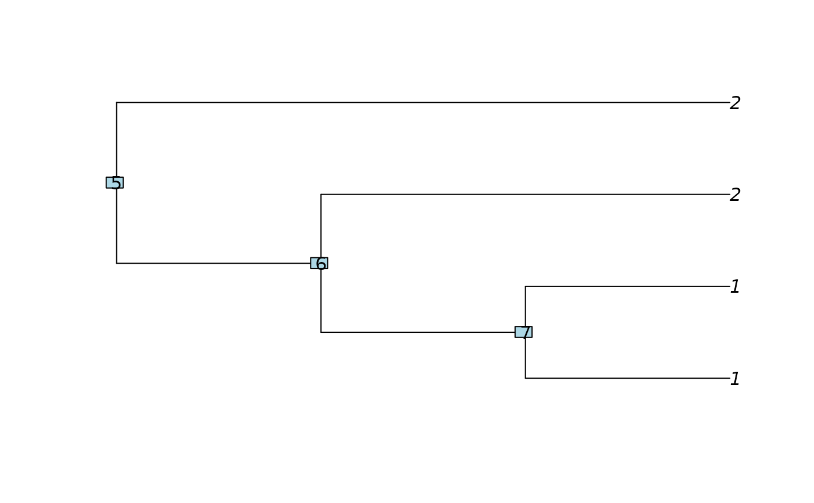

parsimonyCost is an implementation of the Sankoff algorithm,
when the cost of transition between two state is always one. It is used
in functions parsimonyNumber and enumerate_parsimony
to count or enumerate all the parsimonious solutions given one clustering of the
tips.
Arguments
- phylo
a phylogenetic tree, class
phylo.- clusters
the vector of the clusters of the tips. (Default to all the tips in a single group).
Value
An S3 class "parsimonyCost" containing a
(ntaxa + Nnode) x (nclus) matrix of the total number of shifts needed to
get the clustering, if starting from a node in state k. The cost can be
extract from any subtree with function extract.parsimonyCost.
Examples
tree <- read.tree(text="(((1,1),2),2);")
plot(tree); nodelabels()

clusters <- c(1, 1, 2, 2)
costs <- parsimonyCost(tree, clusters)
costs
#>
#> Parsimony cost: 1.
#>
## Extract the parsimony cost at the root
extract(costs)
#> [1] 1
## Extract the cost for the sub-tree below node 7
extract(costs, 7)
#> [1] 0